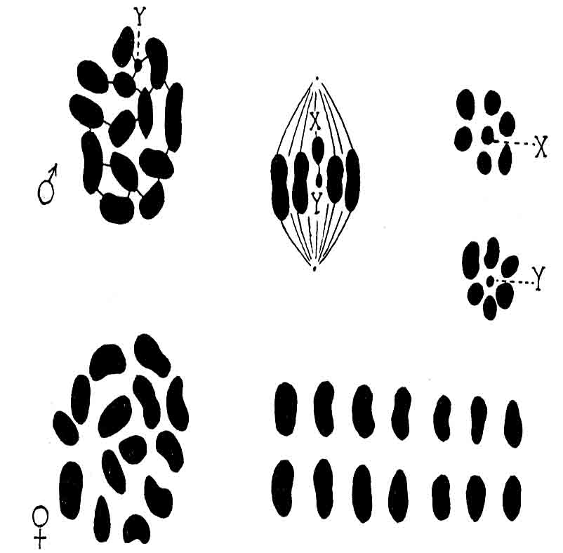
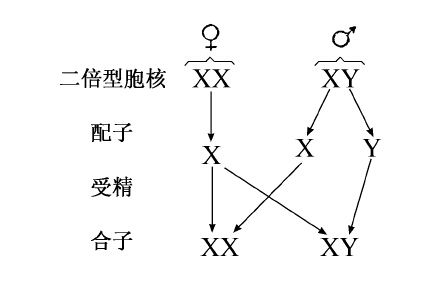
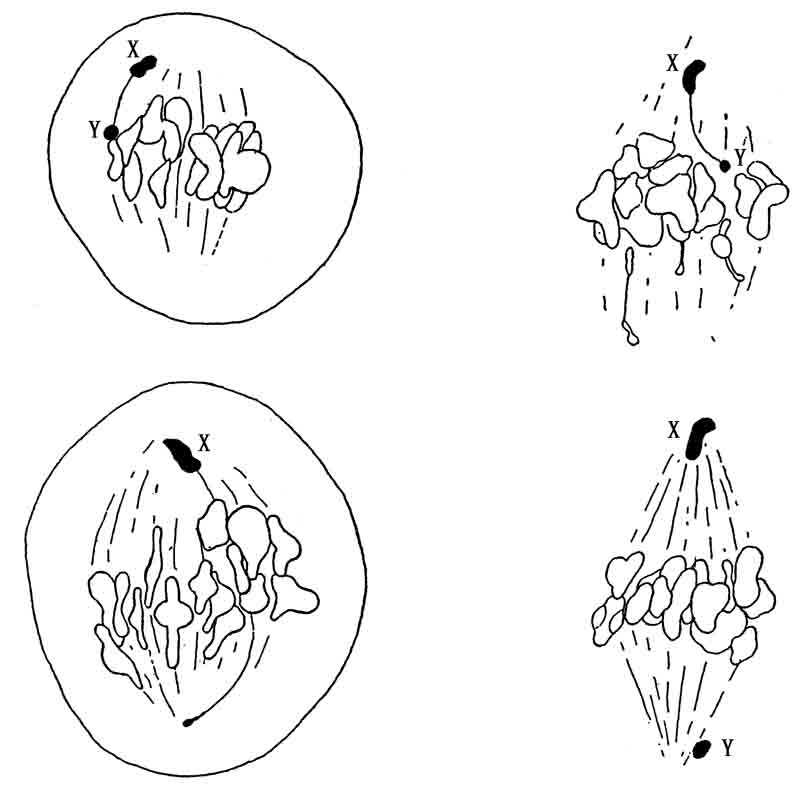

昆虫型（XX—XY）
昆虫型的雌虫有两条称为X染色体的性染色体。当卵子成熟时（即放出两个极体以后），染色体数目减少一半。于是每个成熟卵有一条X染色体，此外，还有一组普通染色体。雄虫只有一条X染色体（图112）。在一些物种里，X染色体孤立无偶；但在另一些物种里，X染色体却有一条被称为Y染色体的作为配偶（图113）。在一次成熟分裂中，X和Y各趋入相反的一极（图113）。一个子细胞得这条X，另一个则得Y。在另一次成熟分裂时，染色体各自分裂为子染色体。结果得到四个细胞，四个细胞以后变成了精子：其中两个各有一条X染色体；另两个各有一条Y染色体。

图112 雌性和雄性的Protenor的染色体群。雄虫有一条X染色体，但缺乏Y染色体；雌虫有两条X染色体（仿Wilson）

图113 长蝽（Lygaeus）的雌型和雄型染色体群。雄虫有X和Y；雌虫有两条X染色体（仿Wilson）
任何卵子同X精子受精（图114）即成雌性，有两条X染色体。任何卵子同Y精子受精，即成雄性。两种受精的机会相等，预期一半子代为雌性，一半为雄性。

图114 示性别决定的XX—XY型机制
有了这样的机制，便可以说明某些遗传中表面看去似乎不符合孟德尔式3与1的比例，但是经过严密检查，却看到了这种表面上的例外情况证实了孟德尔第一定律。例如，白眼雌果蝇同红眼雄果蝇交配时，其子代红眼蝇是雌性，白眼是雄性（图115）。如果X染色体上带有红眼和白眼分化基因，则以上的解释便明白了。子代雄蝇从白眼母蝇得到一条X；子代雌蝇也从母蝇得到一条X，但又从红眼父蝇得到一条X。父方基因为显性，所以子代雌蝇都有红眼。
如果用子代雌蝇同子代雄蝇交配，孙代会出现白眼的雌蝇雄蝇和红眼雌蝇雄蝇，互成1∶1∶1∶1。这个比例是由X染色体的分布得来，如图115中行所示的。

图115 果蝇白眼性状的遗传。白棒代表有白眼基因（w）的X染色体，黑棒代表“白眼基因”的等位基因即“红眼基因”的X染色体，Y染色体上着细点
附带不妨注意一下，细胞学和遗传学两方面的证据，特别是遗传学证据，证明人类属于XX—XO型或XX—XY型。人类染色体的数目只是到最近才相当精密地确定了。以前观察到的较小数值，已经证明是错误的，因为在浸裂细胞时染色体有互相粘连成群的倾向，据de Winiwarter报道：女性有48条（n＝24），男性有47条（图116a），这种计算已经得到Painter的证实，不过Painter最近证明：男性还有一条小染色体作为较大的X染色体的配偶（图117）。Painter认为这两条染色体便是一对XY。这项观察如果正确的话，那么，男女各有48条染色体，不过男性的一对染色体大小不同。

图116 a.de Winiwarter所描画的减数分裂后的人类染色体群；b.Painter所描画的人类染色体群；c和d.根据Painter的描画，示X染色体同Y染色体彼此分离的侧面观

图117 人类生殖细胞的成熟分裂，示X染色体与Y染色体在分离中（仿Painter）
随后，Oguma在男性里没有找到Y染色体，证实了de Winiwarter所观察到的数目。
人类性别的遗传学证据是十分明确的。例如血友病，色盲及其他两三种性状，都按照白眼果蝇同样的传递方法，遗传到后代。
以下各群动物属于XX—XY型或其XX—XO变型，O表示缺少Y，据报道，除人类外，尚有其他哺乳动物也具备这种机制：如马和负鼠，可能包括豚鼠在内。两栖类也多半属于这一类型，硬骨鱼也是一样。大多数昆虫属于此类；鳞翅目（蛾、蝶）是例外。膜翅类的性别另有一套决定机制（见下文），线虫和海胆也属于XX—XO型。